Neon Alley

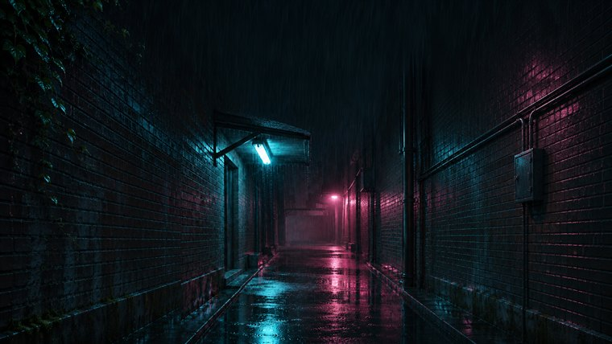
Wallpapers
Ten imaginary city scenes after dark. Every scene comes in a vertical version for phones and a wide version for desktops.
AI-generated images.
Coming to Payhip as individual downloads and as two albums.
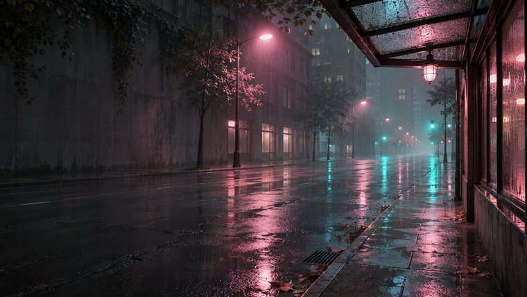


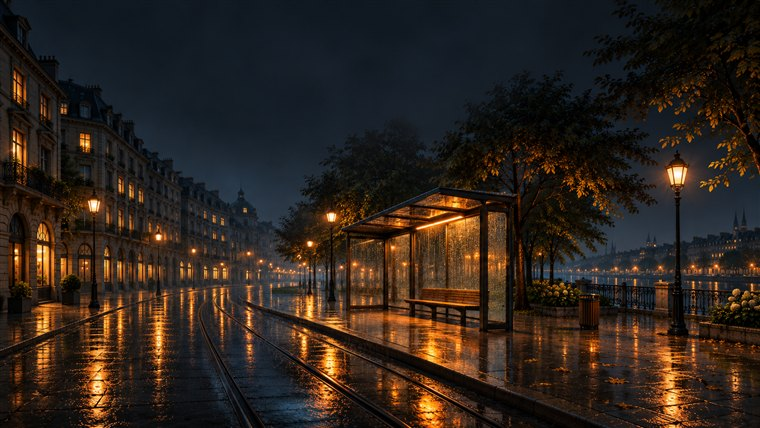
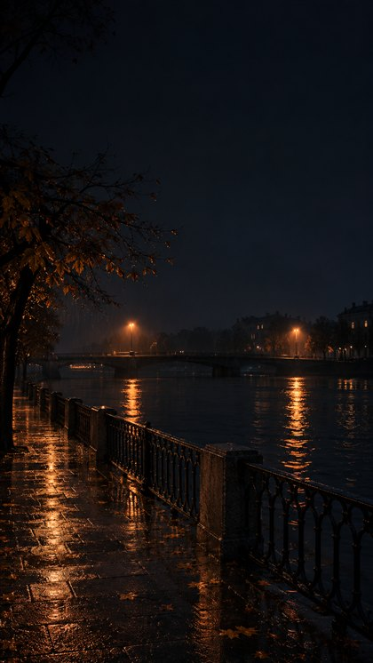
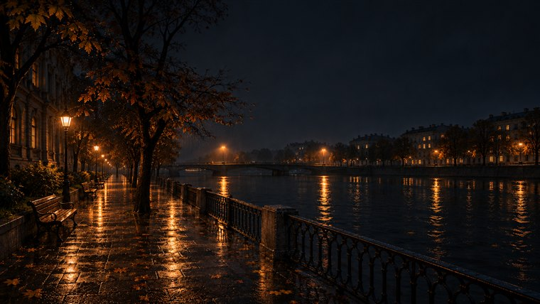


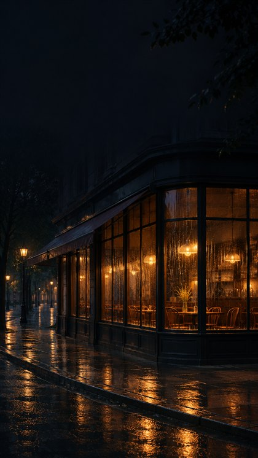
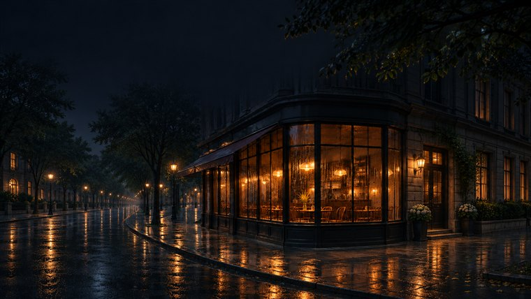


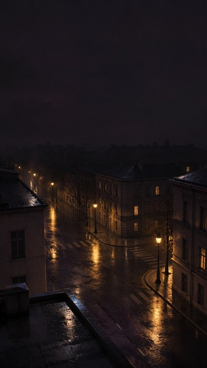

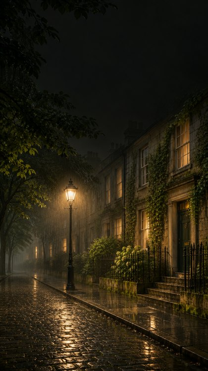
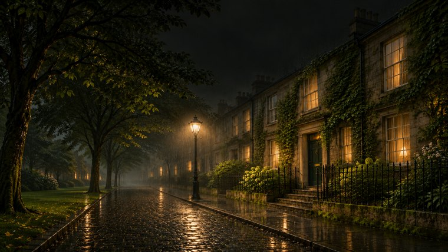


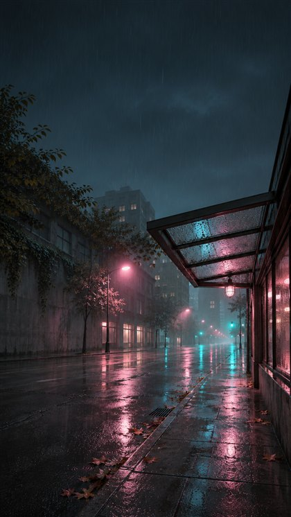